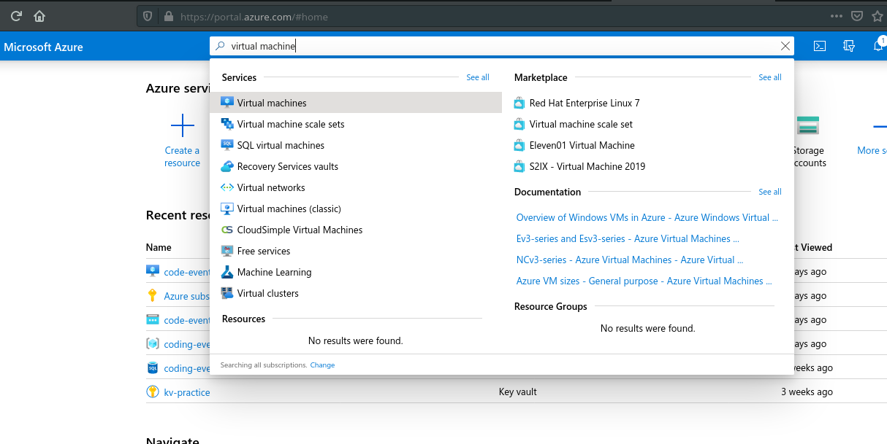
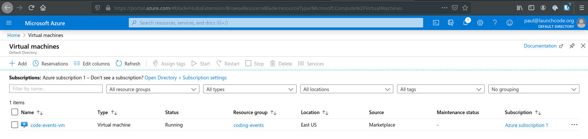

The first Azure service we will be working with in this class is Azure virtual machines.
A virtual machine is a highly customizable virtual computer with an accessible operating system.
From Microsoft: A virtual machine is a computer file, referred to as an image, that behaves like an actual computer. It is virtual in that it is an operating system on an already-existing operating system that is configured to behave like a standalone computer.
You can create and access a virtual machine in a couple of different ways from the Azure Web Dashboard, or using the Azure CLI. We will use both tools to start virtual machines, but today we will focus solely on the Web Dashboard.
You can provision a virtual machine from the Azure Dashboard by accessing the virtual machines blade.
This blade will show you all of the currently provisioned virtual machines, and give you various options for creating new virtual machines, or editing/deleting currently existing VMs.
You can create a new virtual machine by clicking the Add button which takes you to the Create VM screen:
This screen contains several tabs of options that allow you to configure the hardware and image of this virtual machine. You also set which subscription and resource group this VM will be associated with.
After you finish the form to create your VM, Azure takes a couple of minutes to do its work. It will provide you with a public IP address for the machine and you will be able to connect to it to configure it to run your application.
In your activities today, we will take you through the steps to create your first VM and deploy an application to the VM.
We have already mentioned some of the main benefits of using a virtual machine—high availability, accessible via the internet, can be discovered easily with domain names—but they have even more advantages than we mentioned earlier.
VM benefits:
Using the Azure Dashboard or the Azure CLI, you can create a VM anytime, anywhere, and you can configure it to meet your demands.
Azure gives us lots of different options for our VMs. We can fine tune the hardware that is available by dictating exactly how much RAM to use, how powerful the CPU is, and how much disk storage the VM has access to.
Outside of hardware configuration we can choose the image, or operating system, of our VM. We can choose various Linux, Windows, or macOS operating systems. Most of these options can be further configured by choosing the major and minor versions of the images.
After choosing our hardware and image, we can then install any additional software to our VM, such as mysql-cli, git, dotnet, nginx, etc.
We can configure all aspects of our VM: hardware, image, and software.
Since the virtual machine can be configured to use many different images, and you can install whatever technical stack you want to achieve a higher level of parity.
Parity is equivalence between the development environment and production environment. In some instances, you may develop using a slightly different tech stack than the server. Since we can control our server, we control the tech stack. Therefore, we can use the same tech stack for development and production.
Due to the configurable nature of VMs we can vertically scale individual VMs. If our project grows in scope, we can re-configure our VM to allocate more RAM.
Changing the size of an individual VM is considered vertical scaling.
Outside of vertical scaling we can horizontally scale with Azure. Horizontal scaling is the process of creating multiple VMs than can share application traffic. If an application has lots of simultaneous users, multiple copies of the VM can be set up. A load balancer can direct traffic to the various VMs.